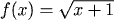
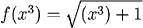
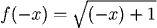
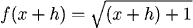

Composition of Functions and Substituting
There are many ways of combining functions to creat more complicated functions. We can combine them using algebraic operations (adding, subtracting, multiplying, and dividing), and can substitute one function into another to create a composition.
Combinations
We can combine functions by adding, subtracting, multiplying or dividing.
| \(2g(x)+f(x) =\) | "twice sin(x) plus the quadratic" | \(= 2\sin(x)+(3+x^2)\) |
| \(1 + \frac{f(x)}{g(x)}\quad =\) | "one plus the quotient of the quadratic and sin(x)" | \(= 1 + \frac{(3 +x^2)}{\sin(x)}\) |
Compositions
If we substitute one function into another, we can generate functions in which one function can be thought of as "inside" the other.
| \(f(g(x)) =\) | "three plus the square of sin(x)" | \(= 3 + (\sin(x))^2\) |
| \g(f(x)) =\) | "the sine of the quadratic" | \(= \sin(3 + x^2)\) |
Simple Substitutions
When we are using the function notation \(f(x)\) and something other than the independent variable alone appears in the parentheses, we are being asked to form a new function by substitution.
|
 |
think: \(f(\ )=\sqrt{(\ ) + 1} \) |
|
 |
the inside function is (\(x^3\)) |
 |
the inside function is (\(2x\)) |
|
 |
the inside function is (\(-x\)) |
|
 |
the inside function is (\(x+h\)) |
Notational Conventions
There are times when it is customary to omit parentheses when writing certain functions.
\(\sin^2x \qquad means\qquad (\sin(x))^2\)
\(\ln x^4 \qquad means\qquad \ln(x^4)\)
Difference Quotients
One common operation which requires both the composition and the combination of functions comes up in the calculation of slope, where we have:
The expression
is called a difference quotient.


Practice
Question 2:
Question 3:
Return to Main
Common Errors
Do not confuse substitution with performing algebraic operations on the function itself. The letters and symbols may be the same, but the meaning is very different.
Example
Even though \(f(3x)\) and \(3f(x)\) each contain the letter \(f\), the number 3 and the letter \(x\), they describe different operations:
Similarly:
And